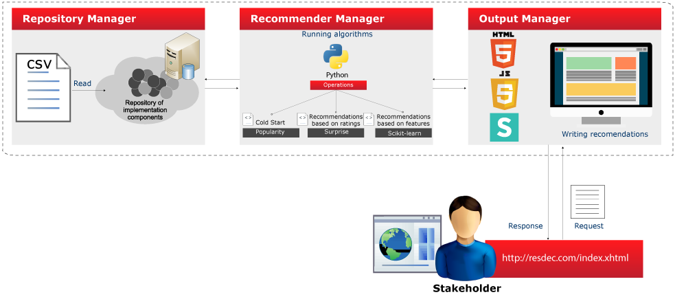

RESDEC is a web tool designed in Phyton that provides recommender algorithms based on collaborative filtering and content filtering to help stakeholders select implementation components in configuring products in an SPL (Software Product Line) according to three scenarios:
Cold Start: The first scenario occurs when a user wants to know which implementation components could be used to configure a new product in an SPL domain. In other words, the user is starting to build a product from zero and therefore does not have profile information. As a result, the system identifies it as a cold start and suggests the implementation components most used and best rated among the community of users. In Wordpress, for example, let’s consider a new user, or a user without experience, who wants to configure a website. In this case, the system will recommend a list of plugins (implementation components) according to which plugins are most popular or best rated by Wordpress users.
Recommendations of components based on ratings: The second scenario occurs when a users has previous experience in implementing components to configure a product in an SPL domain and, based on this experience, needs to improve or develop the product. Note that in this case, the user already has profile information, so the recommendations are done starting with the user’s historical information and the experiences of similar profiles within the community.
In Wordpress, for example, the system considers users’ ratings of plugins used in developing personalized websites. This information allows the system to search for other plugins similar to those installed that also could be used to supplement the site or offer a good substitute to the plugins currently in use.
Recommendations of components based on features: The third scenario, similar to the previous one, occurs when a user has prior experience implementing components to configure a product in an SPL domain. The difference from the previous scenario is that here the recommendations are made considering the content associated with the implementation components, that is, descriptive information that enables improved recommendations. Specifically, we use the features of the implementation components associated with the user’s profile.
In the case of Wordpress, for example, we use tags associated with plugins (component features), with which the system will recommend which plugin tags are most similar to the plugin tags selected by the user.
RESDEC Tool has 3 components: a repository manager, a recommender manager, and an output manager.

The repository manager responds to stakeholder requests and structure DBKnowledge through CSVs. For the dataset we present together with this tool, we used data extracted from Wordpress.
The recommender manager is in charge of processing recommendations based on the three RESDEC scenarios we outlined. It is developed in Phyton with a library package that contains the algorithms the recommender manager carries out according to the scenario the stakeholder selects.
For the Cold Start scenario, RESDEC uses a classic popularity algorithm, while for algorithms executed in the Recommendations of components implementation components based on ratings scenario, it uses Scikit-surprise libraries, and for the Recommendations of components implementation components based on features, it uses the Scikit-learn library.
The recommender manager was designed to be scalable over time. In other words, it provides the ability to extend RESDEC’s benefits by enabling it to tailor new similarity metrics and new recommendation algorithms for each one of the scenarios that a stakeholder could face.
The output manager interacts directly with the stakeholder using the repository manager and the recommendation manager to create a list of implementation component suggestions. It is designed in HTML5 and JavaScript and supported with the Semantic UI interface design framework. Stakeholders interact with RESDEC through a web navigator at http://www.resdec.com .
In general, the output manager is responsible for receiving stakeholder requests and communicating the requirements to the recommender manager in order for it to carry out the suitable algorithm with the information the repository manager provides, finally displaying on screen the recommendations it generates.